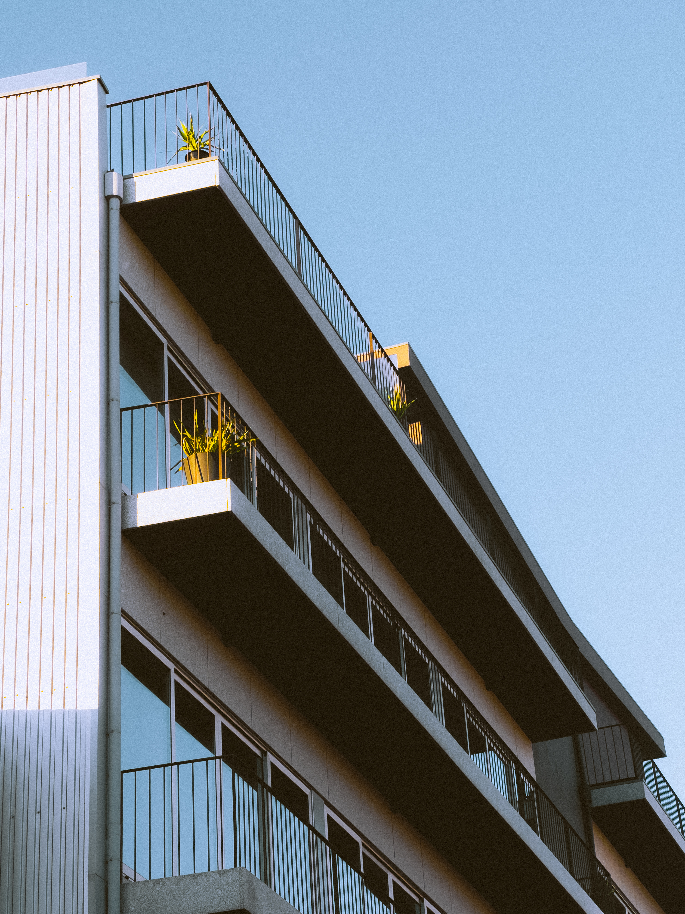
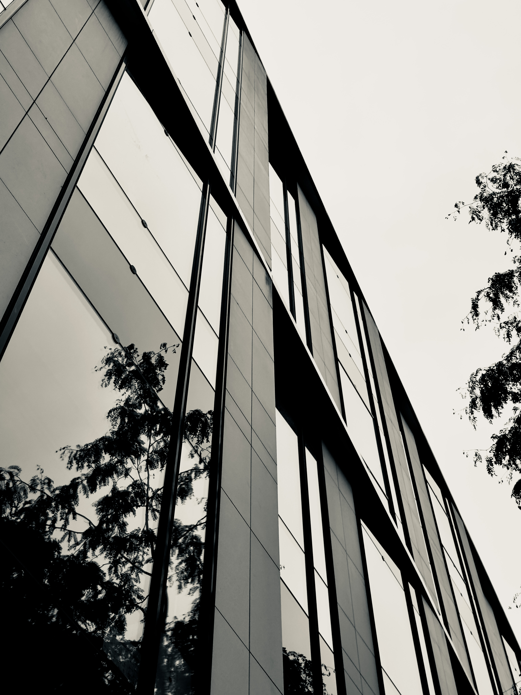
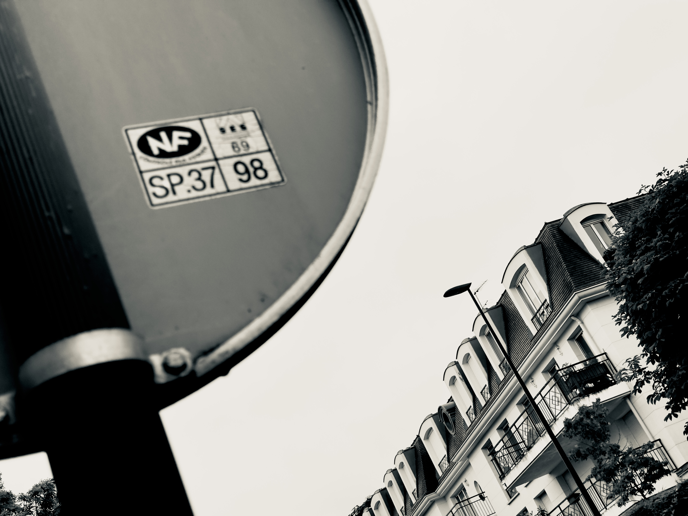
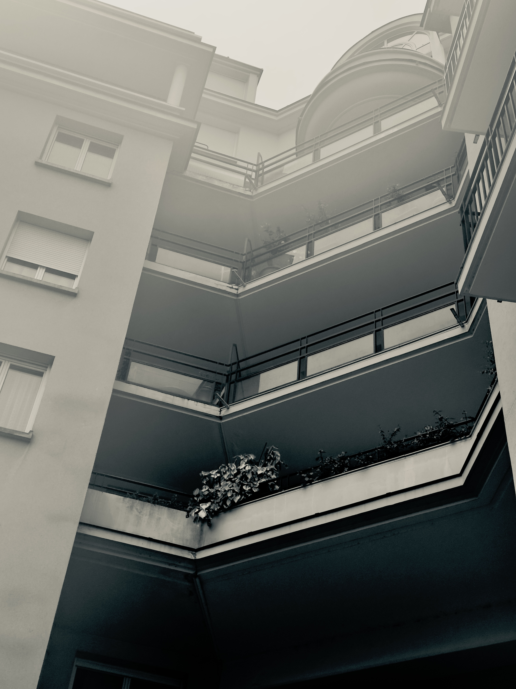
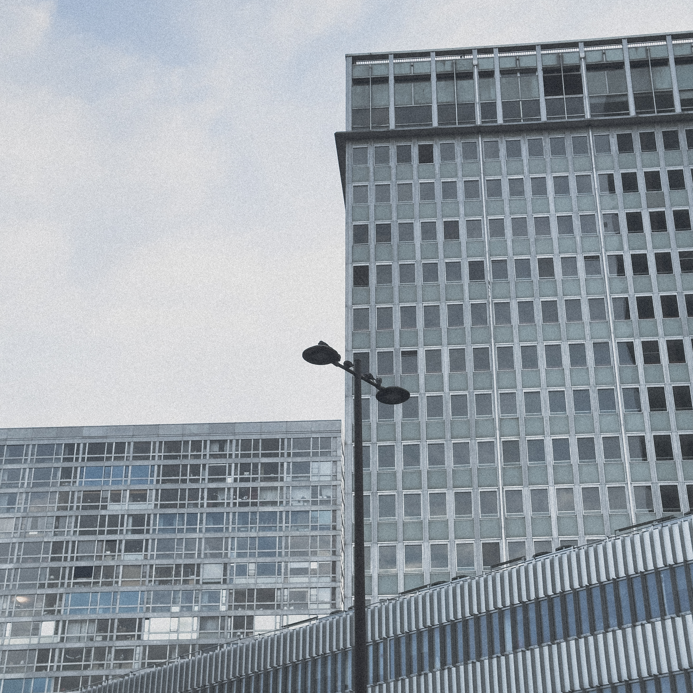
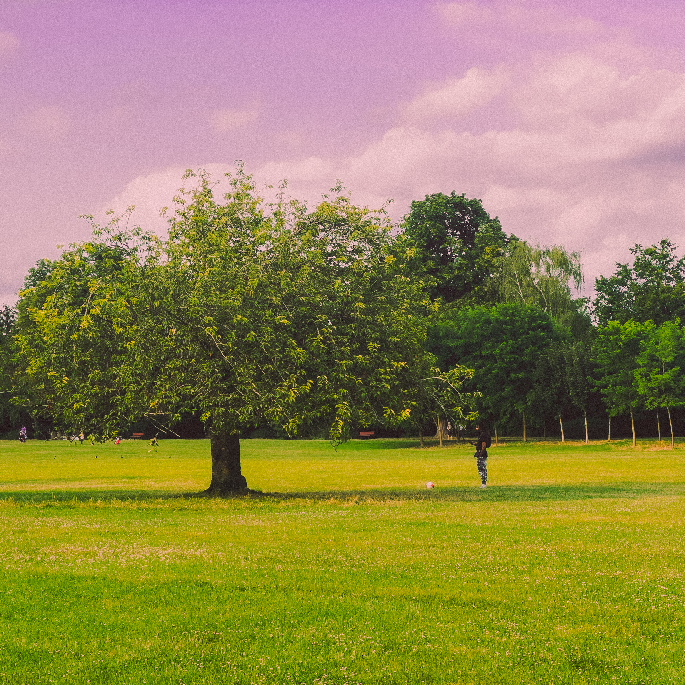
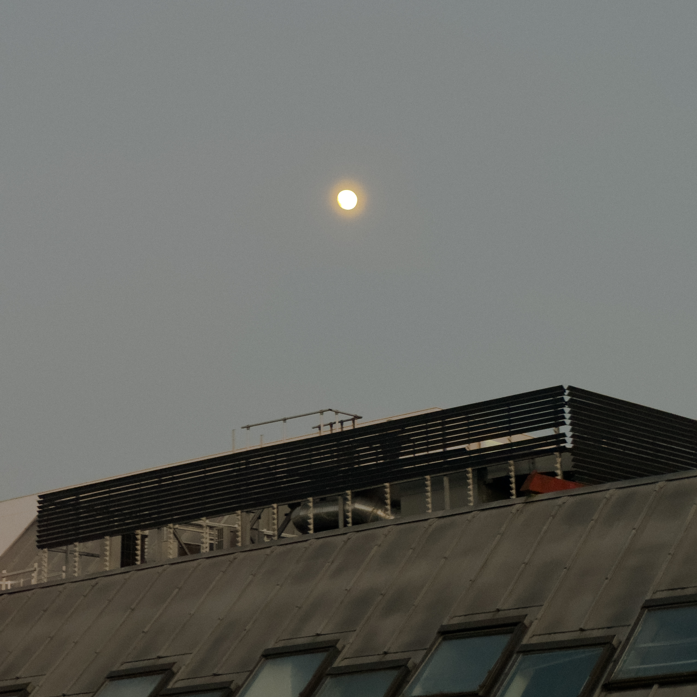

Passions
Je fais du dessin depuis 2020, du beatmaking avec FL Studio depuis 2021 et de la photographie depuis 2022.
Quelques photos que j'ai prises
Toutes ces photos ont été prises avec un iPhone 15 Pro, et modifiées avec Adobe Lightroom Mobile.
Photos prises au Portugal

Photo d'un balcon prise au Portugal
Photos prises à Bourg-la-Reine

Photo d'un bâtiment du centre-ville de Bourg-la-Reine

Photo d'un panneau à Bourg-la-Reine

Photo d'un balcon dans un petit parc à Bourg-la-Reine
Photos de ciel prises à Cachan
Photos prises à Paris

Photo d'un bâtiment en face de la Tour Montparnasse
Photos prises à Sceaux

Photo d'un arbre prise au Parc de Sceaux

Photo de la lune prise à côté du Lycée Lakanal
Photos prises à Vélizy

Photo du soleil prise au-dessus de Vélizy 2